Хунань
ХУНАНЬ 湖南
Оригинал заметки в OneNote
К оглавлению
Фужун 芙蓉
Фужун: Город Водопадов
Представьте себе не просто древний город, а целый мир, построенный на скале, прямо над бушующим водопадом. Это Фужунь, который до 1980-х годов носил скромное название Ванцунь (王村) — «Деревня Царя». Своим нынешним именем, означающим «Лотосовый город», он обязан одноименному культовому фильму 1986 года «Фужунчжэнь» с Лю Сяоцин, который прославил это место на весь Китай.
1. Водопад, протекающий через город (瀑布上的古镇)
Это главная «фишка» Фужуна. Водопад Хунцюнь (红裙瀑布) не просто находится рядом — древние дома народности туцзя построены прямо на его обрыве. Вы можете прогуливаться по узким улочкам и смотреть сквозь щели в дощатом настиле на низвергающиеся вниз потоки. Ночью водопад подсвечивается, создавая волшебную атмосферу. Это единственный в Китае древний город с таким драматичным «фасадом».
2. Улица длиной в пять ли (五里长街)
Главная артерия города — это вымощенная камнем улица, петляющая вдоль реки Юшуй. Ее длина — около 2,5 км (традиционно измерялась как «5 ли»). Это живой музей:
Деревянные дома с резными окнами, висячие балконы, черная черепица крыш.
Мастерские и лавки: Здесь до сих пор вручную ткут знаменитые полотна сибо (西兰卡普), готовят рисовую лапшу, варят соевый соус и продают местный чжэнью (острый соус).
В отличие от переполненного Фэнхуана, здесь царит более аутентичная, спокойная атмосфера, особенно ранним утром или поздним вечером.
3. Глубокие история и культура
Столица вождей туцзя (土司王朝): Более 800 лет Фужун был политическим и военным центром региона, резиденцией вождей (тусы) народности туцзя. Дворец Туских Вождей (土司行宫), встроенный в скалу над водопадом, — впечатляющее свидетельство той эпохи.
Причал для лодок (酉阳雄关): Город был ключевым портом на древнем «Чайном пути» с юга на север. По каменной лестнице в 113 ступеней носильщики доставляли товары с лодок в город.
Фотографии в OneNote
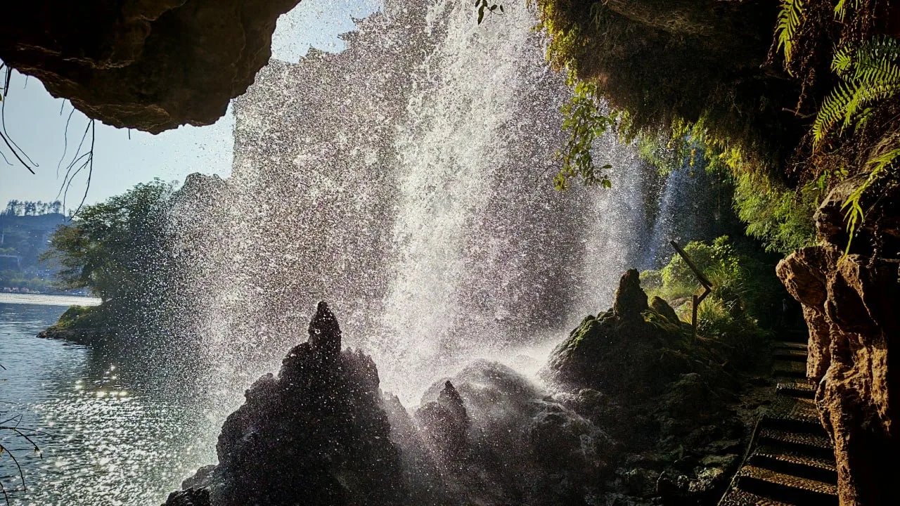
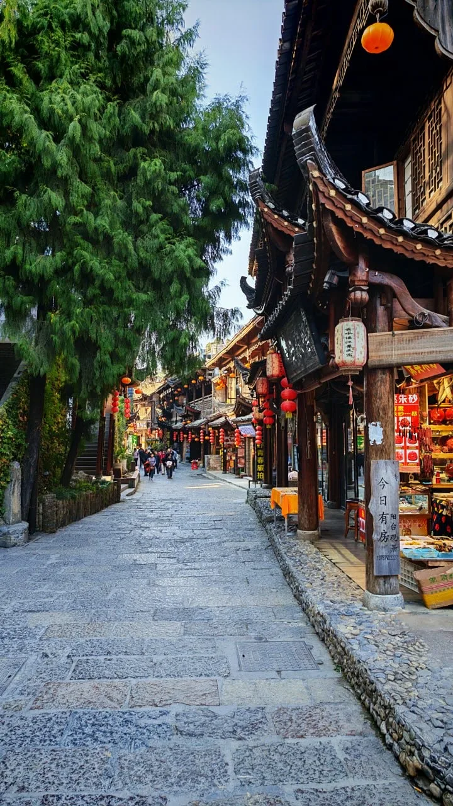
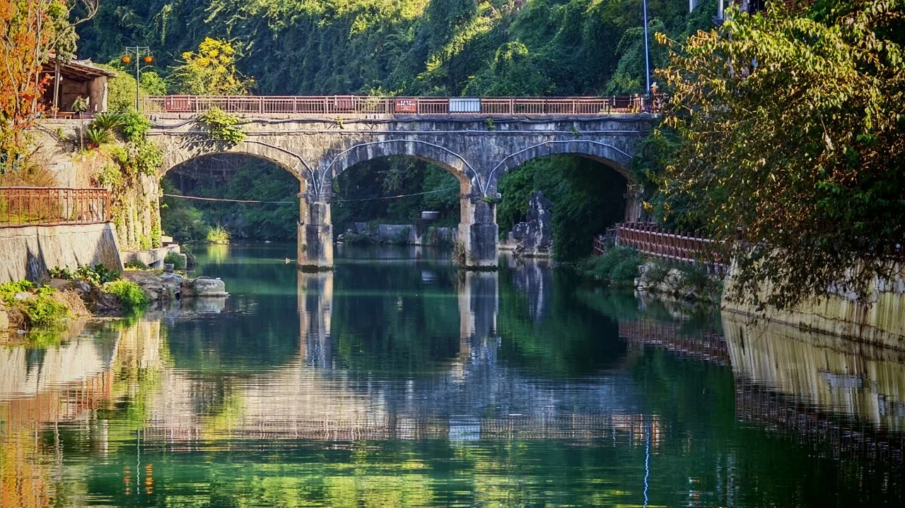
К оглавлению
Чжанцзяцзе 张家界
К оглавлению
Тяньмэнь 天门
Небесные Врата Чжанцзяцзе (гора Тяньмэнь).
Это не просто достопримечательность, а полноценное приключение, где сама дорога к вершине заставляет сердце биться чаще. Представьте себе огромную природную арку, вырезанную в скале на высоте 1500 метров, к которой ведет «Дорога в небеса» из 99 поворотов и стеклянная тропа над пропастью. Звучит как декорации к фильму? Добро пожаловать в реальность!
Что такое Тяньмэнь?
Это гигантская природная карстовая пещера, образовавшаяся в 263 году нашей эры после обрушения части горы. Ее размеры потрясают: высота — 131,5 метра, ширина — 57 метров, глубина — 60 метров. Древние китайцы увидели в этом знак свыше и назвали «Вратами в Небо». С тех пор гора считается священной, а пещера — местом, где соединяются земля и небеса.
Посещение Тяньмэнь — это последовательность уникальных этапов.
Лучший порядок такой (Маршрут А в 2025-2026 годах):
1. Канатная дорога Чжанцзяцзе — ваши «крылья»
Это самая длинная пассажирская канатная дорога в мире (7,5 км!). За 15 минут вы пролетите над головокружительными обрывами, тропическим лесом. Это лучшая вводная в масштабы этого места.
Внимание! В ноябре 2025 года часть канатной дороги закрыто на ремонт. Вместо второй части канатной дороге, теперь на маргруте "А" вам предосталена возмоможность проехать по "Дороге в небеса".
2. «Дорога в небеса» — 99 крутых поворотов
Дорога длиной 11 км — это инженерное чудо и испытание для вестибулярного аппарата. Каждый поворот — на градус ближе к небу. Совет: занимайте место у окна справа по ходу движения для лучших видов.
3. Лестница к Небесам — 999 ступеней
Чтобы предстать перед Вратами, нужно преодолеть пешую лестницу в 999 ступеней. Это символьный путь к благословению и долголетию. Подъем требует сил, но вид снизу вверх на гигантскую арку незабываем. Для тех, кто не может идти, есть эскалаторы (стоимость билета 32 юаня).
4. Небесная тропа у вершины — «прогулка по облакам»
На самой вершине горы, еще до спуска к арке, вас ждет Стеклянная тропа «Гуйгу», проложенная по краю вертикального обрыва. Идти по прозрачному полу, под которым лишь пропасть и парящие облака, — главный вызов для смельчаков. Выдадут бахилы для сцепления и чистоты.
Фотографии в OneNote
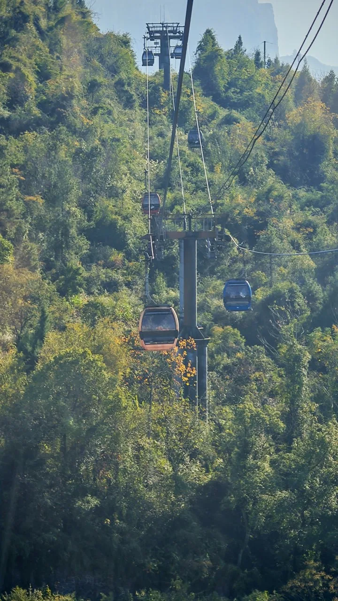
К оглавлению
Достопримечательности Чжанцзяцзе
Достопримечательности в Чжанцзяцзе.
Национальный лесной парк Чжанцзяцзе
张家界国家森林公园
Trip
Парк горы Тяньмэнь
天门山国家森林公园
Trip
Гранд Каньон
张家界大峡谷
Trip
Пещера Желтого дракона
黄龙洞景区
Trip
72 Башня Чудес
张家界七十二奇楼
Trip
________________________________________
ФИГНЯ:
Гора семи звезд
张家界七星山景
Trip
Шоу феи лисы
张家界《天门狐仙》实景演出
Trip
Романтический парк Чжанцзяцзе
张家界千古情
Trip
Очаровательное шоу «Сяньси» в Чжанцзяцзе
张家界《魅力湘西》演出
Trip
К оглавлению
Дороги в ЧЦЦ
Фотографии в OneNote
К оглавлению
Чанша 长沙
Провинция Хунань. Чанша. День 1: От тишины храмов до биения сердца города
Приветствую вас, дорогие читатели, из самого сердца Китая — города Чанша! Мое путешествие только начинается, и первый день обещает быть насыщенным. Я решил начать с погружения в контрасты этого удивительного мегаполиса, где древность и современность существуют в неразрывном танце.
Мой временный дом — отель Huatian, удачно расположенный недалеко от центра. Главный его плюс — рядом станция метро, которая в городе-миллионнике становится настоящей волшебной палочкой-путешественника. И именно она в этот день стала моим верным проводником.
Утро в обители спокойствия: Храм. Кайфу
Первую точку на карте я выбрал специально, чтобы избежать суеты. Погрузившись в ритм подземки, я вышел у ворот храма Кайфу (Kaifu Temple).
И вот — магия момента. Стоит сделать шаг за храмовую ограду, как шумный мегаполис остается где-то там, за стенами. Воздух наполняется тонким ароматом сандала, а единственными звуками становятся мерное бормотание молитв и шелест листьев вековых деревьев. Территория храма — это лабиринт из павильонов с закрученными крышами, позолоченных статуй и прудов, где важные карпы медленно разрезают гладь воды. Здесь нет спешки. Здесь дышится полной грудью. Эта утренняя медитация в Кайфу стала идеальным началом, позволившим настроиться на философский лад и набраться сил перед дневной прогулкой.
По следам истории: Улочка Чаоцзунцзе
Насытив душу спокойствием, пора было обратиться к истории. Всего несколько остановок на метро — и я перенесся в другую эпоху, оказавшись на старой пешеходной улице Чаоцзунцзе (Chaozong Street).
Это место — настоящая машина времени. Под ногами — отполированные временем и миллионами шагов историческая брусчатка. По бокам — не высотные стекляшки, а старинные постройки с резными фасадами и традиционной архитектурой. Но Чаоцзунцзе — не просто музей под открытым небом. Это живой, дышащий организм. Здесь вперемешку с сувенирными лавками и чайными соседствуют модные концепт-студии, арт-галереи и кофейни, спрятавшиеся в двориках. Улочка бурлит жизнью, но ее ритм — не бег по кругу, а неспешная, приятная прогулка. Я пил свежесваренный кофе, разглядывая многовековые стены, и чувствовал, как наслаиваются друг на друга эпохи.
Сердце мегаполиса: Встреча с гигантом KAWS
И вот настал время для самого яркого контраста. Из тихой, исторической улочки я направился туда, где бьется настоящее сердце современного Чанша — к Международному финансовому центру (IFS).
Взгляд уперся в острые шпили небоскребов, сверкающих на солнце. Подняв голову, я увидел его — знаменитую скульптуру KAWS на седьмом этаже торговой галереи. Огромный, яркий, поп-артный символ, ставший визитной карточкой города. Вид этого современного идола на фоне стекла и бетона впечатляет и немного сюрреалистично. Здесь, на площади, царит совершенно иная энергетика — динамичная, мощная, устремленная в будущее.
Площадь Уи, раскинувшаяся у подножия небоскребов, — это и есть пульс Чанша. Место, где встречаются деловые люди, туристы с селфи-палками и местные жители, назначающие встречи у фонтанов. Стоя здесь, в самом эпицентре, я оглянулся на пройденный путь: от утренней тишины храма, через исторические мотивы Чаоцзунцзе — к этому футуристическому хабу.
Первый день, а точнее его первая часть, подарила невероятное ощущение многогранности Чанша. Этот город не выбирает, кем ему быть — древним или современным. Он с блеском является и тем, и другим одновременно.
Провинция Хунань. Чанша. День 1, Часть 2: Ритм улиц, речной бриз и путешествие во времени
Если утро в Чанше было посвящено тишине и истории, то вторая часть дня обещала погружение в его пульсирующую, энергичную современность. И, как выяснилось, в его ностальгическую душу.
От мощной, футуристической Площади Уи я ступил на главную артерию города — пешеходную улицу Хуансин (Huangxing Pedestrian Street). И вот он, настоящий взрыв жизни! Эта улица — бесконечный карнавал шопинга, гастрономии и людского потока. Яркие неоновые вывески, музыка из каждого второго магазина, зазывалы из фуд-кортов и ароматы, которые сводят с ума, — здесь все движется в сумасшедшем, но каком-то гармоничном ритме.
Здесь можно найти всё: от гигантских флагманских магазинов известных брендов до уютных бутиков. Я заглянул в грандиозный IS Mall, где на нескольких этажах расположились гиганты вроде Uniqlo и H&M. Но главное сокровище Хуансин — это ее еда. Улица еды — это отдельная вселенная, где в облаках пара готовятся острые люй юй (рыба с перцем), шипят воки и подаются десятки видов шашлычков. Это гастрономический ад и рай одновременно!
Островок старины: Улочка Пози
Современный гул Хуансин ненадолго прервался, когда я свернул на улицу Пози (Pozi Street). Это ответвление — как портал в прошлое. Под ногами застучала брусчатка, сменив гладкий асфальт, а по бокам выстроились старинные постройки с деревянными ставнями. Здесь продают не масс-маркет, а традиционные хенд-мейд сувениры, местный чай и закуски. Невероятно, как в двух шагах от бешеного ритма Хуансин можно найти такой тихий, аутентичный уголок.
Речной бриз и поэзия в Павильоне Дафу
Насытившись городской суетой, я почувствовал потребность в просторе и направился к реке Сянцзян. Моей целью был Павильон Дафу (Dufu Pavilion) — величественная башня на берегу, названная в честь великого поэта эпохи Тан Ду Фу.
Поднявшись на его смотровую площадку, я застыл от восторга. Отсюда открывалась панорама, ради которой стоит приехать в Чанша. Прямо по течению лежал таинственный Оранжевый остров (Orange Island), окутанный вечерней дымкой. Длинный и загадочный, он манил к себе, напоминая, что это приключение — лишь в самом начале. Мы договорились встретиться с ним в субботу, на шестой день пути. А пока я просто стоял, вдыхал свежий речной бриз и наблюдал, как закатное солнце начинает раскрашивать небо в пастельные тона. Вид с павильона — это поэзия, воплощенная в пейзаже.
Ночь в 80-х: магия Вэньхэю
Финальным аккордом этого невероятного дня стало место, которое сложно описать словами. Вэньхэю (Changsha Wenheyou) — это одна из самых гениальных мистификаций, которые я когда-либо видел.
Снаружи — обычное современное офисное здание с торговым центром. Ничто не предвещает чуда. Но стоит найти «исторический» вход, как ты проваливаешься во времени лет на 40 назад.
Попав внутрь, я ахнул. Это не просто ресторан или музей. Это воссозданный в мельчайших деталях квартал Китая 1980-х годов. Узкие, запутанные улочки-балконы, облупившаяся краска на стенах, старые афиши, висящее на веревках белье, крошечные квартирки-экспозиции, лавки с советскими игрушками и ретро-автомобили. Здесь нет окон в современный мир, только неон вывесок закусочных, где готовят знаменитые чоудоу (вонючий тофу) и острые crayfish. Атмосфера настолько плотная и аутентичная, что кажется, вот-вот из-за угла появится герой какой-нибудь старой мелодрамы.
Проведя здесь несколько часов, поедая невероятно вкусные локальные блюда в этом сюрреалистичном антураже, я почувствовал, что день завершился идеально. Чанша снова показал свой характер: он может быть древним, сверхсовременным, а может — намеренно остановившимся во времени, чтобы подарить своим гостям самую неожиданную ностальгию.
Первый день в Ханани подошел к концу. Он был долгим, насыщенным и абсолютно незабываемым. Впереди — новые открытия!
К оглавлению
Буддийский храм Кайфу
古开福寺
Адрес: 湖南省长沙市开福区开福寺路152号
Время работы: 6.30-17.30
Как добраться:
метро 开福寺 Kaifu Temple (линия 1), выход 1
📍Геолокация
Храм обладает огромной исторической глубиной:
Основан в 947 году н.э. во времена Пяти династий и Десяти царств, правителем царства Чу — Ма Инь.
Изначально это была резиденция сына Ма Иня, позже превращенная в буддийский монастырь.
Расцвет храма пришёлся на династии Мин и Цин, когда он стал крупным центром буддийского учения Чань.
За свою более чем 1000-летнюю историю храм многократно разрушался (особенно во время войн, например, в период войны с Японией) и восстанавливался.
Последняя крупная реставрация проводилась в 1980-х годах, и с тех пор комплекс активно поддерживается.
Архитектура и структура комплекса
Территория храма обширна и живописна. Архитектура выдержана в классическом стиле эпох Мин и Цин. Основные строения расположены вдоль центральной оси:
Главные ворота (山门, Шаньмэнь)
Зал Небесных Царей (天王殿, Тяньвандянь)
Большой Зал Великого Героя (大雄宝殿, Дасюнбаодянь)
Зал Гуаньинь (观音殿, Гуаньиньдянь)
Павильон Дхармы (法堂, Фатан)
Библиотека сутр (藏经阁, Цзанцзинэ)
Чем знаменит и почему стоит посетить?
Духовный центр: Это не музей, а живой, дышащий монастырь. Здесь можно увидеть монахов за практикой, ощутить атмосферу спокойствия и увидеть верующих за молитвой.
Архитектурная гармония: Классическая китайская храмовая архитектура, яркие цвета (красный, золотой, зеленый), резные детали, изогнутые крыши — всё это очень фотогенично.
Оазис спокойствия в мегаполисе: Несмотря на то, что Чанша — шумный современный город, на территории храма царит тишина и умиротворение.
Культурная ценность: Храм внесён в список ключевых буддийских монастырей Китая Ханьского региона.
Традиции: Особенно многолюдно здесь во время важных буддийских праздников (например, день рождения Будды) и в китайский Новый год.
Что делать посетителю?
Созерцать архитектуру: Неторопливо пройтись по всем залам, обращая внимание на детали.
Наблюдать за жизнью монастыря: Послушать чтение сутр, звон колоколов.
Многие приходят, чтобы зажечь благовония и попросить благословения у будд и бодхисаттв (для здоровья, удачи, мудрости).
Традиционная забава — попытаться бросить монетку в центр каменного диска в пруду на удачу.
Храм Кайфу — это душа Чанши, её историческое и духовное сердце. Он предлагает путешественнику уникальную возможность всего за пару часов перенестись из ультрасовременного небоскрёбного города в тихий, гармоничный мир древнего буддизма. Это место силы, истории и культурного погружения, которое обязательно стоит включить в маршрут по Чанше.
Оригинал заметки в OneNote
К оглавлению
Пешеходная улица Чаоцзун
潮宗街
Адрес: 湖南省长沙市开福区通泰街街道潮宗街22号
Как добраться:
Между станциями метро Peiyuanqiao 培元桥 и Wuyi Square 五一广场
📍 Геолокация
Чаоцзун — это не просто улица для покупок, это атмосфера. Она представляет собой идеальный синтез старого и нового: отреставрированные исторические здания эпохи Цин и Республики (1912-1949), в которых теперь разместились дизайнерские бутики, концепт-кафе, винные бары и арт-пространства. Это место для неторопливых прогулок, открытия локальных брендов и погружения в более аутентичную, творческую сторону города.
1. Исторический ландшафт:
Происхождение названия: "Чаоцзун" буквально означает "следование приливам". Улица исторически вела к воротам в городской стене, через которые чиновники отправлялись на лодках в Пекин — "следовали приливу" к императорскому двору.
Архитектура: Здесь можно увидеть хорошо сохранившиеся "постройки в стиле республиканской эпохи" с характерными серыми кирпичными фасадами, арками и черепичными крышами. Это редкий для центра мегаполиса уголок подлинной старины.
Каменные дороги: Мощеные брусчаткой переулки, которые сохранили дух старого Чанша.
2. Современная креативная начинка:
Бутики и дизайн: Маленькие магазинчики местных дизайнеров одежды, винтажной мебели, handmade-аксессуаров и сувениров с характером.
Кафе и бары: Множество стильных, часто скрытых во двориках, кофеен с обжаркой собственных зерен и авторскими напитками. Вечером открываются тихие винные бары и коктейльни.
Культурные пространства: Независимые книжные магазины, небольшие галереи, студии. Часто здесь проходят литературные вечера, выставки и воркшопы.
Бутик-отели: Несколько отелей, расположенных в отреставрированных исторических зданиях, предлагающих уникальный опыт проживания.
3. Гастрономия с характером:
Здесь не так много уличных лотков с фаст-фудом, как на Хуансин. Акцент сделан на качественную еду и атмосферу:
Стильные рестораны фьюжн-кухни.
Заведения с локальной хунаньской кухней в современной подаче.
Уютные пекарни и кондитерские.
4. Атмосфера и публика:
Царит спокойная, интеллектуальная и немного богемная атмосфера. Это место притяжения для молодых творческих professionals, художников, студентов и туристов, ищущих аутентичность, а не массовые развлечения.
Что делать на Чаоцзун?
Заблудиться в переулках: Главное удовольствие — неспешно гулять, заглядывать во внутренние дворики, находить скрытые арки и фотографировать контраст старой архитектуры и современного дизайна.
Выпить кофе с видом на историю: Выберите уютное кафе на втором этаже старого дома и наблюдайте за жизнью улицы.
Найти уникальный сувенир: Купить что-то созданное местным мастером, а не массовый продукт.
Почувствовать ритм старого Чанша: Отойти от главного туристического потока и представить, как здесь кипела жизнь 100 лет назад.
Вернуться вечером: Улица красиво подсвечивается, атмосфера становится более интимной, идеальной для ужина или бокала вина.
Оригинал заметки в OneNote
К оглавлению
Скульптуры KAWS
IFS国金购物中心
Адрес: 湖南省长沙市芙蓉区解放西路188号
Время работы: 10.00-22.00
Как добраться: метро Wuyi Square 五一广场
📍 Геолокация
Башня IFS с двумя известными скульптурами на крыше — SEEING / WATCHING от KAWS и выход №2 из метро Wuyi Square
Эти три точки образуют идеальный треугольник в радиусе 200 метров, который можно обойти за 15-20 минут.
Старт в метро. Приезжаете на станцию "Wuyi Square" (五一广场). Выходите через выход №2 (ищите указатели на IFS). Делаете фото с надписью "长沙".
Поднимаетесь на поверхность. Перед вами — огромная площадь и комплекс IFS. Сделайте панорамные фото башен.
Идете к IFS. Заходите внутрь торгового центра, поднимаетесь на лифте на крышу (L7). Проводите время, фотографируясь с скульптурами KAWS вблизи и с видом на город.
Финальный кадр. Спустившись, отойдите на площадь подальше, чтобы поймать в кадр и скульптуры на крыше, и небоскребы. Особенно эффектно вечером, когда включается подсветка.
Башня IFS & Скульптуры SEEING / WATCHING от KAWS
Это абсолютный символ современного Чанши.
Что это? Changsha IFS (International Finance Square) — комплекс из двух небоскребов (высотой 452 м и 315 м). На крыше (на уровне L7 торгового центра, если точно) установлена масштабная бронзовая скульптурная композиция всемирно известного американского художника KAWS под названием "SEEING / WATCHING".
Внешний вид: Это две фигуры — большая сидящая (компаньон) и меньшая, прильнувшая к парапету и смотрящая вниз. Они выполнены в узнаваемом стиле KAWS: графичные формы, закрытые глаза-крестики, меланхоличное выражение.
Почему это культово?
Масштаб и расположение: Гигантские скульптуры на фоне неба и городского пейзажа создают потрясающий визуальный контраст.
Имя KAWS: Художник — икона современного поп-арта, его работы невероятно популярны и узнаваемы среди молодежи по всему миру.
Фотогеничность: Это идеальный, уникальный фон для фото, который сразу говорит: "Я в продвинутом, современном Чанша".
Оригинал заметки в OneNote
К оглавлению
Пешеходная улица Хуансин
黄兴步行街
Как добраться:
метро Huangxing Square 黄兴广场
📍 Геолокация
Сердце Старого Чанши: Лабиринт Вкусов и Истории
Если пойти дальше от финансового центра IFS, мы выйдем на огромную площадь с экранами, и увидим начало центральной пешеходной улицы Хуансин 黄兴步行街
Статуя Хуан Сина: В центре улицы возвышается бронзовая статуя Хуан Сина — важного революционного деятеля эпохи Синьхайской революции, в честь которого и названа улица. Это классическое место встречи.
Океан неоновых вывесок: Гигантские экраны, светящиеся иероглифы, реклама мировых и локальных брендов. Особенно впечатляет вечером и ночью.
Гастрономический рай: Это одна из главных причин популярности. Здесь находятся десятки ресторанов, закусочных и бесчисленные уличные лотки.
柠 檬 茶 ◎ 原 美 合 人 【 大 長 沙 琪 食 辣 家 OR5000 河 口 中 国 福 利 彩 票 CHINA WI LFARE LOTTERY LIMLEES 烏 復 勝 ( 井 里 》 柠 檬 茶 CHANGSHA FOOD PLAZI 20 年 維 中 油 葵 椰 椰 万 记 里 脊 肉 塞 吃 過 大 长 沙 老 长 沙 臭 豆 腐 长 沙 国 一 代 高 豆 腐 情 報 考 LINLEER yeA, 椰 子 鮮 制 饮 品 19 川 柠 季 〈 手 打 〉 柠 檬 茶 椰 才 够 爽 整 个 椰 椰 才 够 爽 整 超 大 串 里 脊 肉 好 大 钟 味 错 好 吃 Jot " width="351" height="624" " data-src-type="image/jpeg" " data-fullres-src-type="image/jpeg" />
Оригинал заметки в OneNote
К оглавлению
Чанша Вэньхэю
长沙文和友
Адрес: 铺子湘江中路二段36号
Время работы: 11.00-02.00
Как добраться:
недалеко от пешеходной улицы Хуансин, метро Huangxing Square 黄兴广场
📍 Геолокация
Чанша Вэньхэю (长沙文和友, Changsha Wenheyou) — это культурный феномен, машина времени и самое атмосферное место в городе, которое обязан посетить каждый турист. Это настоящая достопримечательность, где едят.
Что это такое?
Представьте себе полноразмерный декорационный павильон к фильму, воссоздающий трущобы, улицы и быт Чанша 1980-90-х годов, но расположенный внутри современного торгового центра.
Вэньхэю — это:
Не музей, но погружает в историю. Здесь можно трогать всё, ходить везде и даже жить (краткосрочно в отеле).
Не просто ресторан, а съемочная площадка. Вы — главный герой, гуляющий по исчезнувшему городу.
Квинтэссенция "старого Чанша". Здесь собраны в гиперреалистичной форме все приметы ушедшей эпохи.
Внешний вид и атмосфера: Улица Янси (样西老街) в миниатюре
Вы входите с ультрасовременной улицы в огромное 5-7 этажное пространство (площадью более 20 000 кв.м.), которое представляет собой лабиринт:
"Улочки" с вывесками парикмахерских, видеосалона, табачной лавки.
"Квартиры" с облупившейся краской, старыми телевизорами, веревками с бельем.
"Коммунальные дворы" с бетонными столами для покера, велосипедами у стен.
"Магазинчики", продающие не сувениры, а настоящие местные закуски (леденцы, вяленое мясо).
Детали: Открытая канализационная труба с (ненастоящими) крысами, пожелтевшие афиши, треснувшие зеркала, тусклые лампочки.
Звуки: Транслируется старое радио, слышны обрывки разговоров.
Главная идея: Создать у посетителя эффект ностальгического диссонанса и полного погружения.
Что здесь делать? (Чем заняться кроме еды)
Исследовать каждый уголок. Это главное! Поднимайтесь по узким лестницам, заглядывайте в каждый "дом" и "магазин". Каждый этаж и переулок — это новая инсталляция.
Делать атмосферные фотографии. Это рай для стилистической съемки. Одежда в винтажном или контрастном современном стиле будет смотреться идеально.
Пробовать локальные закуски. Помимо основного ресторана, здесь десятки киосков со знаменитыми уличными блюдами Чанша: Чоу Доуфу (вонючий тофу), лапша с говядиной, засахаренные фрукты, креветки по-хунаньски.
Посетить маленькие "аттракционы". Например, есть комната с старыми игровыми автоматами, можно прокатиться на лифте-клетке.
Остановиться в отеле (если есть возможность). Внутри комплекса есть несколько тематических номеров, оформленных как квартиры 80-х. Это уникальный опыт.
Почему это так популярно? (Феномен Вэньхэю)
Ностальгия для местных. Для жителей Чанша, чей город стремительно изменился за 20 лет, это — путешествие в детство.
Шок и экзотика для туристов. Для приезжих это безопасный, но максимально аутентичный способ увидеть "грязный", "настоящий" старый Китай, которого уже нет.
Идеально для соцсетей. Это готовые, уникальные, бесконечно цитируемые кадры. Хештег #文和友 в Douyin (TikTok) — это миллионы просмотров.
Успешный бизнес-кейс. Из одного лотка с жареными креветками выросла империя, построенная на продаже опыта, а не просто еды.
Вэньхэю — это MUST-VISIT в Чанша. Даже если вы не планируете здесь есть (хотя стоит попробовать), прийти сюда обязательно. Это уникальный пример того, как можно превратить общепит в высокое искусство инсталляции и самый мощный инструмент ностальгического туризма. Это не про вкус еды (он хорош, но не сногсшибателен), а про вкус эпохи, который здесь можно буквально потрогать руками. Это спектакль, в котором вы — и зритель, и участник.
Оригинал заметки в OneNote
К оглавлению
Историческая улица Пози
坡子街
Адрес: 坡子街
Цена билета: бесплатно
Как добраться:
недалеко от пешеходной улицы Хуансин, метро Huangxing Square 黄兴广场
📍Геолокация
Улица Пози (坡子街, Pozi Jie) — «Огненная артерия»
Брусчатка под ногами: Мощёная булыжником дорога сразу задаёт тон. Это не просто декор — это исторический слой города.
Океан огней и вывесок: С наступлением темноты улица вспыхивает. Неоновые иероглифы, красные фонарики, яркие светящиеся вывески ресторанов и лавок создают ощущение непрекращающегося праздника. Это невероятно фотогенично.
Гастрономическая Мекка: Сама улица — живой музей хунаньской кухни. Здесь десятки знаменитых на весь Китай ресторанов-«лаоцзыхао» (老字号), где рецептам больше ста лет. Воздух густой и пряный от ароматов копчёного мяса «лужань», острого перца и жареных деликатесов.
Дворец Огня
火宫殿
Дворец Огня (火宫殿, Huo Gong Dian) — «Святилище в переулке»
Не пропустите его! Он скрывается прямо в проулке, ответвляющемся от Пози-стрит
Неожиданный поворот: С шумной, яркой улицы вы сворачиваете под традиционные ворота — и попадаете в отдельный мир.
История и культ: Изначально (с 1747 года) это был храм бога огня, которого почитали для защиты города от пожаров. Сегодня это больше культурный символ и гастрономический центр.
Что внутри: Комплекс зданий в традиционном стиле с пагодами. Внутри кипит жизнь: на первом этаже — фуд-корт с лучшими уличными закусками Чанша под одной крышей. Можно попробовать идеальный «чоу доуфу» (вонючий тофу), сахарные валики и десятки других блюд, не бегая по уличным лоткам.
Атмосфера: Гул голосов, звон посуды, пар от котлов под древними крышами — это абсолютно уникальный опыт на стыке духовного и очень земного.
重 庆 火 锅 子 街 艾 玛 坡 子 街 铺 王 小 酒 馆 二 楼 2000 年 電 話 139195-4239-85 长 沙 烟 火 味 百 味 美 食 第 三 城 寨 村 典 灣 茶 唐 风 市 集 美 食 城 奶 皮 子 糖 葫 芦 20 원 한 테 세 趙 家 臭 豆 腐 万 记 里 脊 肉 李 工 业 和 咖 啡 升 車 美 酒 新 馬 上 市 1900 美 國 爭 容 易 常 工 術 med 香 甜 酥 脆 ~ 超 大 串 里 脊 肉 店 8000 一 口 满 足 够 大 等 味 够 好 吃 " width="351" height="624" " data-src-type="image/jpeg" " data-fullres-src-type="image/jpeg" />
Оригинал заметки в OneNote
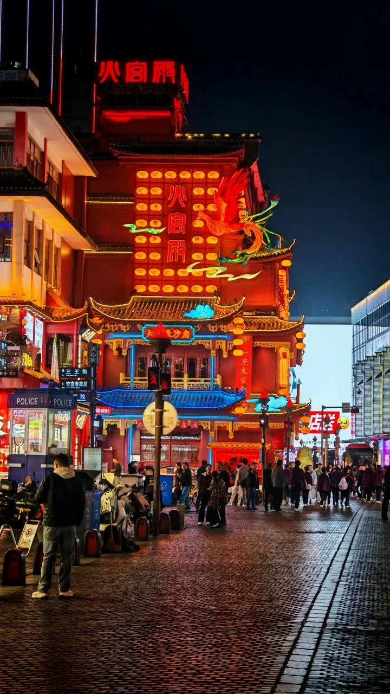
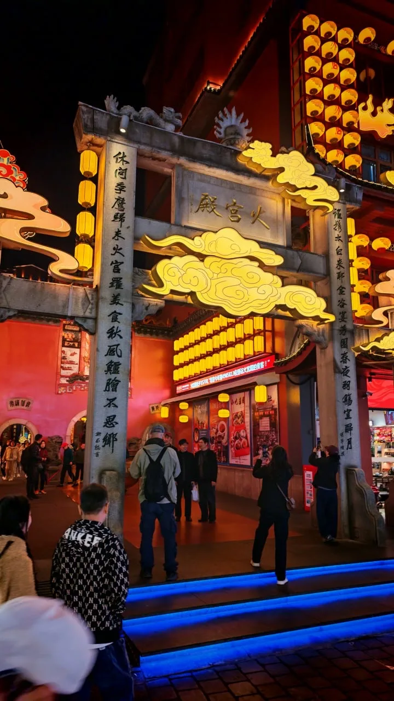
К оглавлению
Апельсиновый остров и Памятник Мао Цзэдуну (ААААА)
橘子洲头碑
Цена билета: 40 юаней за электрические машинки на острове
Как добраться:
Метро линия 2, станция Чжоуцзытоу · Апельсиновый остров» (橘子洲·青莲)
📍Геолокация
Памятник Мао Цзэдуну на Апельсиновом острове (Чжоуцзытоу, 橘子洲头) — это не просто скульптура, а главный и самый масштабный монумент Чанши, символ города, имеющий огромное историческое и культурное значение.
Этот гигантский гранитный бюст-памятник Мао Цзэдуну, первому председателю КНР, находится на самой южной оконечности Апельсинового острова (Чжоуцзытоу / Orange Isle Park) — узкого длинного острова посреди реки Сян в центре Чанши.
Это самый большой в мире скульптурный портрет Мао и одна из ключевых достопримечательностей города.
Открыт к 100-летию со дня рождения Мао Цзэдуна в 1993 году.
Реконструирован и значительно увеличен в 2009 году, приобретя нынешний грандиозный вид.
Внешний вид и масштаб
Именно размеры производят самое сильное впечатление:
Высота головы: 32 метра (сопоставимо с 10-этажным домом).
Длина лица: 83 метра.
Ширина носа: 8.5 метра.
Общая высота с постаментом: около 40 метров.
Материал: Гранит из специально выбранного карьера в провинции Фуцзянь. Состоит из 138 гранитных блоков.
Художественный образ: Мао изображен молодым, с характерной длинной прической, смотрящим на север (в сторону центра города и своих альма-матер). Выражение лица задумчивое, вдохновленное, устремленное в будущее.
Фотографии в OneNote
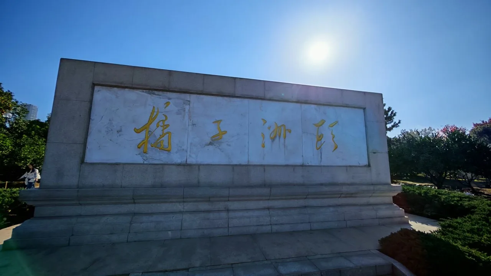
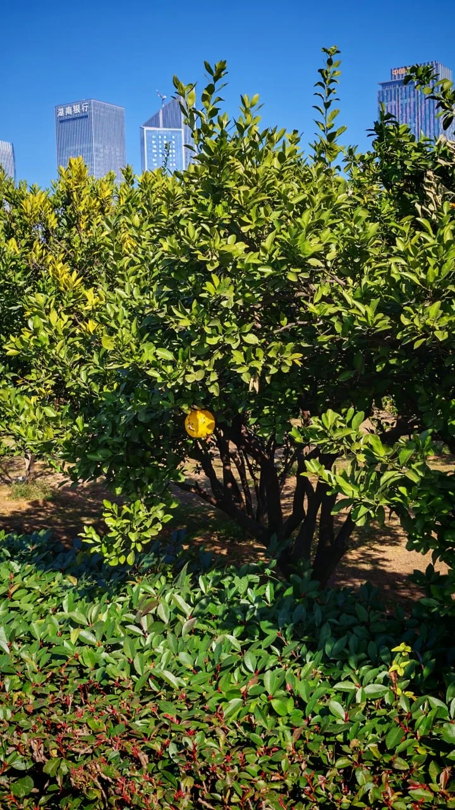
К оглавлению
Чандэ 常德
Город Чандэ
Наш второй день начался с переезда из Чанша в Чандэ, этот город находится в 150 км от Чанша, за два часа мы добрались в соседний город. И наше знакомство с ним началось с Парка цветения персика который находится в пригороде Чандэ.
К оглавлению
Персиковый парк
Парк Источник персиковых цветов (ААААА)
桃花源风景名胜区
Как добраться: На автобусе из города Чандэ
📍 Геолокация
Парк «Источник персиковых цветов» (桃花源风景名胜区, Táohuāyuán Scenic Area) — место, известное каждому китайцу со школы.
Это не просто парк, а огромный тематический ландшафтный комплекс, построенный вокруг одной из самых известных литературных утопий в мире.
Легенда и история
Всё началось с поэта Тао Юаньмина (陶渊明, 365–427 гг.) эпохи Восточная Цзинь. Он написал прозаическую поэму «Записки о Персиковом источнике» (《桃花源记》).
Сюжет: Рыбак из Улина (древнее название района Чандэ) заплывает в верховья реки, набредает на рощу цветущих персиковых деревьев, ведущую в горный проход. За ним он обнаруживает изолированную от мира идеальную деревню, где люди ведут мирную, простую и счастливую жизнь, не зная о войнах и смутах снаружи. Вернувшись, он не может найти путь обратно.
Значение: Это аллегория о поисках духовного убежища, идеального общества (утопии) и ностальгии по простой жизни. Текст обязателен для изучения в китайских школах, поэтому «Страна персиковых цветов» (世外桃源, Shìwài Táoyuán) — это нарицательное понятие, означающее «райский уголок, укромное местечко».
Парк — это физическое воплощение этой легенды, попытка воссоздать тот самый мир, описанный поэтом.
Лучшее время посещения: Конец марта – апрель, когда цветут персиковые деревья. Это пик сезона и невероятная красота. Осень (сентябрь-октябрь) также хороша своими красками.
Парк «Источник персиковых цветов» — это путешествие в произведение. Это место для медленной прогулки и созерцания. Цель — не поразить техническими чудесами, а вызвать в посетителе то самое чувство умиротворения, оторванности от суеты и гармонии с природой, о котором писал Тао Юаньмин. Это попытка найти свой собственный «персиковый источник» внутри — что делает его очень глубоким и личным опытом для китайского туриста. Для иностранца — это уникальный шанс понять одну из основ китайской эстетики и мечты об идеальном мире.
Фотографии в OneNote
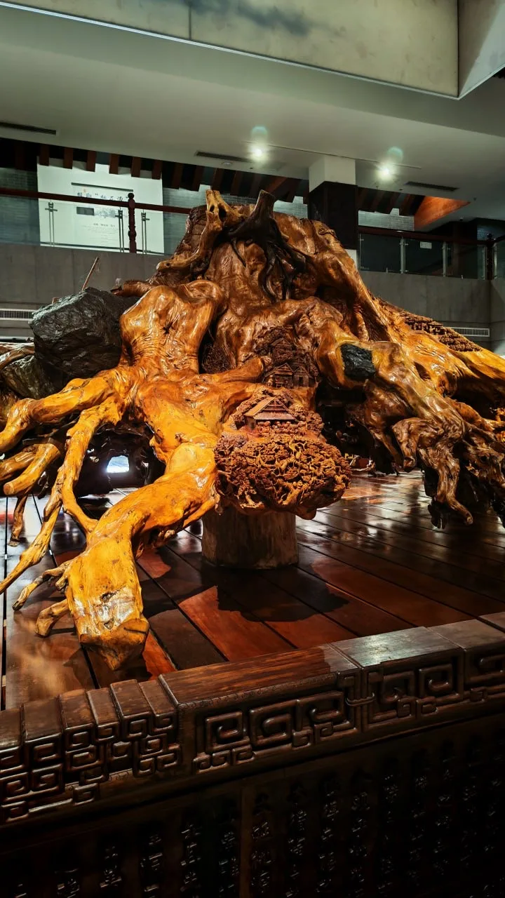
К оглавлению
Набережная Люе и озеро Ивового Листа
柳叶湖
Это визитная карточка и главная зона отдыха современного Чандэ. Это не естественное озеро, а огромное рукотворное водохранилище и ландшафтный парк, созданный для улучшения экологии и жизни горожан.
Озеро Люе (柳叶湖, Liǔyè Hú — Озеро Ивового Листа) является самым большим внутригородским озером в Китае.
Чисто, просторно, красиво. По берегам проложены пешеходные и велодорожки, разбиты сады, установлены скульптуры. Это лицо Чандэ как «города-сада».
Музей «Сокровищница Превращения Рыбы в Дракона» (鱼化龙宝库, Yúhuàlóng Bǎokù)
Музей находится на набережной у озера Люе.
Легенда «Рыба, становящаяся драконом» (鱼化龙, yú huà lóng): Это древняя китайская аллегория, означающая превращение, преображение, стремительный взлёт и успех (часто связанный с успешной сдачей императорских экзаменов). Рыба, преодолевшая водопад, превращается в могучего дракона.
Чандэ стоит на реке Юаньцзян, и рыба/вода — часть его идентичности. Этот музей представляет собой тематическую галерею посвящённую этой легенде. Он символизирует стремление города к развитию и трансформации.
Мы увидели экспозицию, связанную с водой, рыбой, драконами в китайской культуре и археологические находки.
Далее на историческом кораблике, добрались до острова на озере, и по искусственному мостику встречая закат дошли до нашего автобуса.
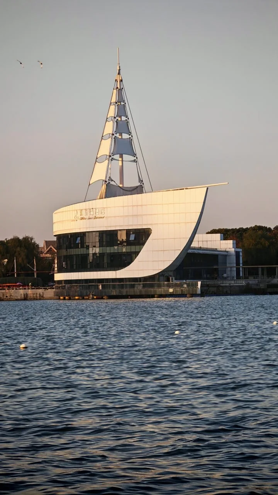
Фотографии в OneNote
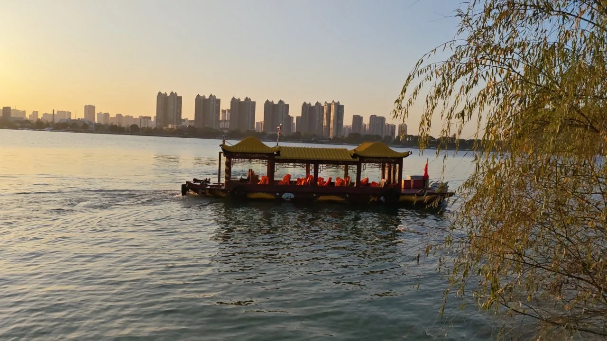
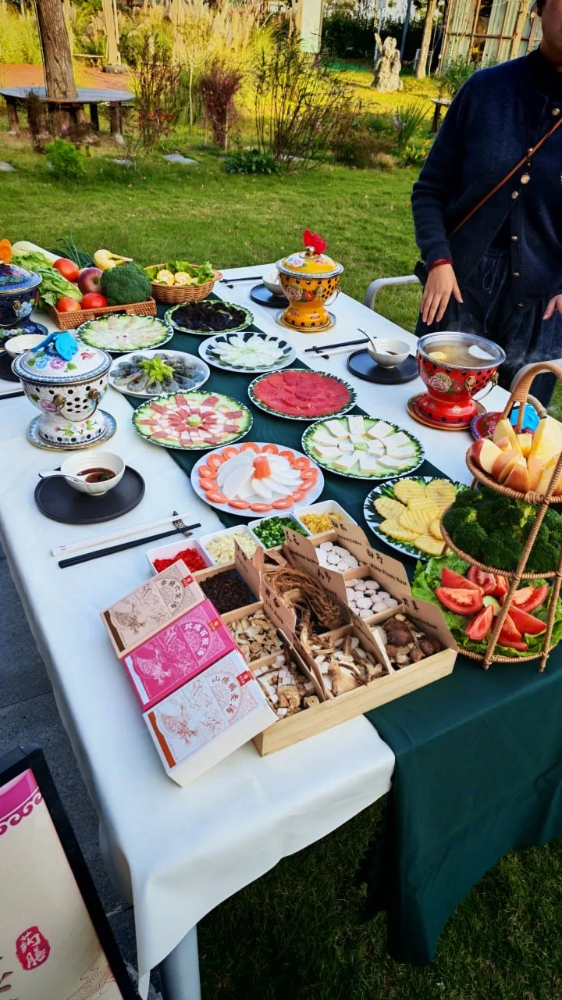
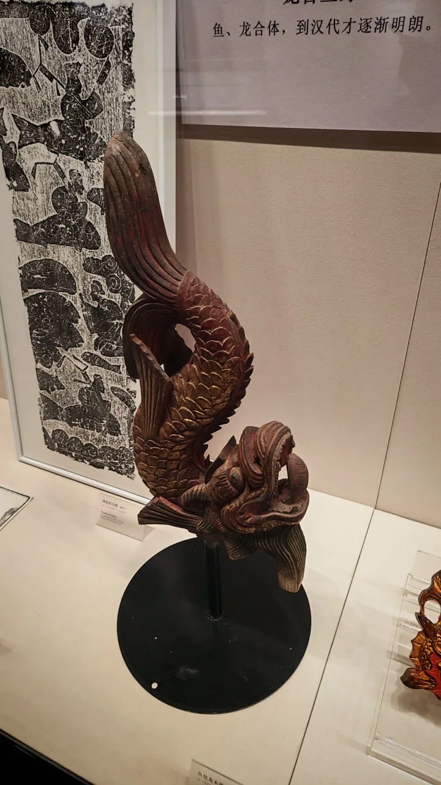
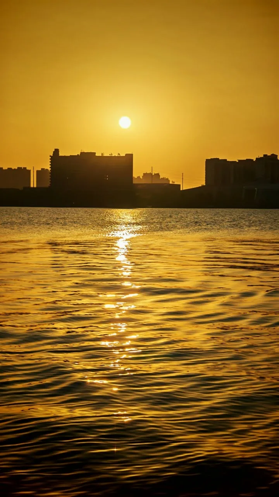
К оглавлению
Пешеходная улица Шэньдинмэнь
神鼎门步行街
Это не просто улица для шопинга, а тематическая улица-аттракцион, связанная с самой известной достопримечательностью Чандэ.
Что такое Шэньдинмэнь (神鼎门)?
Буквально: «Врата Божественного Треножника/Котла» (Шэнь — божественный, Дин — треножник/сосуд для варки эликсира, Мэнь — ворота).
Это название — отсылка к главной локации парка «Источник персиковых цветов» (桃花源), в котором мы были днем в этот день.
Легенда: Согласно преданию, описанному в поэме Тао Юаньмина, именно за каменными воротами в форме треножника (神鼎门) скрывался вход в ту самую сокрытую от мира утопическую деревню.
Таким образом, пешеходная улица Шэньдинмэнь в Чанде — это попытка воссоздать «внешний», подготовительный мир перед входом в легендарную страну персиковых цветов.
Внешний вид и атмосфера
Представьте себе сцену из исторического фильма:
Стилизация под эпоху династии Хань (206 до н.э. – 220 н.э.) или Троецарствия. Массивные деревянные и каменные постройки, башенки, черепичные крыши, фонари.
Брусчатка и детали: Мощёная улица, искусственные скалы, водопады, деревянные мостики. Всё создано для полного погружения в древнюю атмосферу.
Огни (по вечерам): После захода солнца включается красивая подсветка: жёлтые фонарики, контурная подсветка зданий, что делает улицу очень фотогеничной и таинственной.
Что здесь на самом деле?
Это коммерческо-туристический комплекс, где акцент сделан на развлечения, сувениры и гастрономию в тематических декорациях.
Магазины и сувениры: Множество лавок продают местные деликатесы (вяленое мясо, чай, сладости), сувениры ручной работы (веера, украшения, миниатюры), одежду в стиле ханьфу для аренды и фотосессий.
Рестораны и кафе: Тематические заведения, где можно попробовать хунаньскую кухню, в том числе знаменитые чандийские рисовые лапши (常德米粉), но в обстановке древнего трактира.
Развлечения и интерактив:
Выступления: Уличные представления, традиционная музыка, танцы.
Квесты и фото-точки: Можно сделать фото в исторических костюмах на фоне «ворот Шэньдинмэнь».
Атмосфера «ожившей легенды»: Актёры в костюмах эпохи ходят по улице, создавая ощущение, что вы действительно попали в прошлое на пороге сказочного места.
Шоу «Повесть о Чанде» / «Прошлое Чанде» (常德往事) на реке Чуаньцзыхэ
Суть шоу:
Это историческая драма-спектакль под открытым небом, рассказывающая историю Чандэ через века. Основной сюжет строится вокруг знаменитого литературного произведения «Записки о персиковом источнике» (桃花源记) поэта Тао Юаньмина, а также вокруг реальных исторических событий и легенд, связанных с городом, его рекой и людьми.
Формат и зрелищность :
Реальные плавучие декорации: Дома, лодки, мосты на воде, которые двигаются.
Световая проекция на водяные экраны и фасады зданий: Создаются гигантские динамичные картины.
Живые актёры на лодках и по берегам: Они играют прямо среди зрителей (на берегу).
Огненные и водные спецэффекты, фейерверки.
Оригинальная музыка и хореография.
Маршрут следования: Зрители не сидят в зале, а движутся вдоль берега реки вслед за основным действием Это делает их участниками прогулки по живой истории.
Основные сцены (главы) шоу:
Обычно представление делится на несколько эпизодов, которые разворачиваются на разных участках реки (длиной около 7 км):
Появление легенды о «Персиковом источнике».
Сцены из жизни древнего Чандэ как портового города.
Исторические события, наводнения, борьба.
Финальная, самая зрелищная часть с масштабными эффектами и фейерверками.
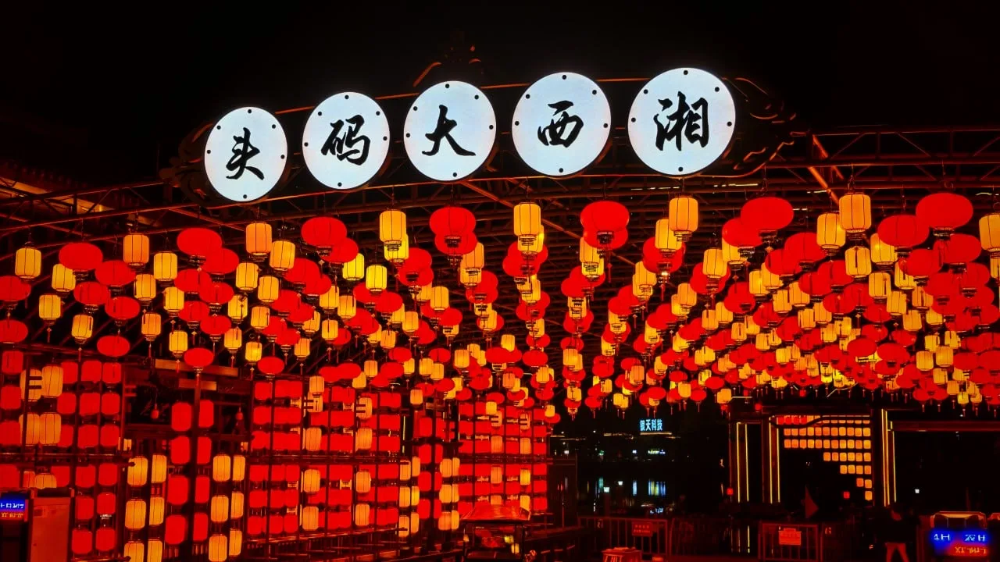
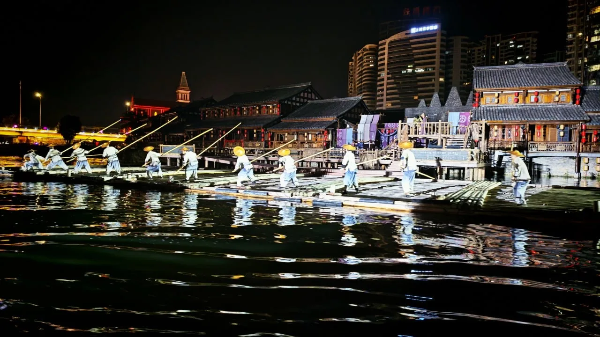
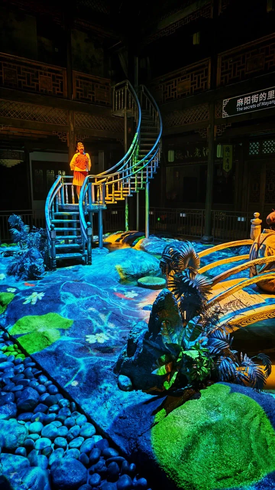
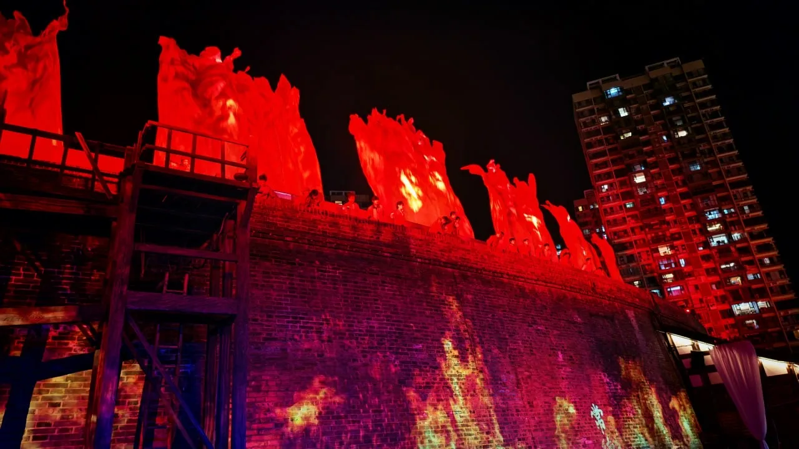
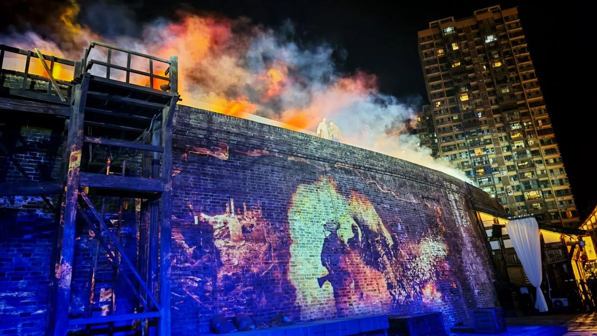
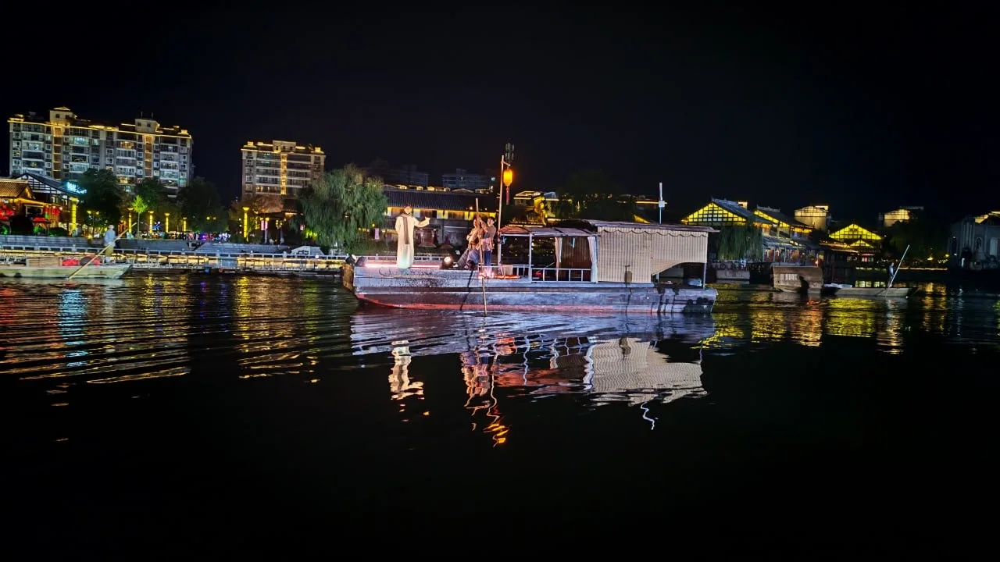
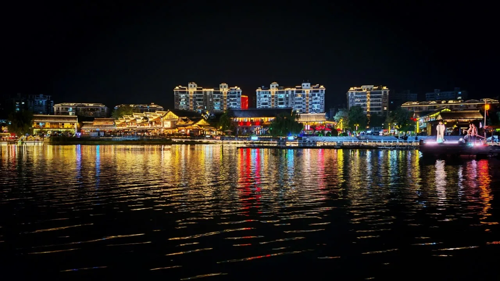
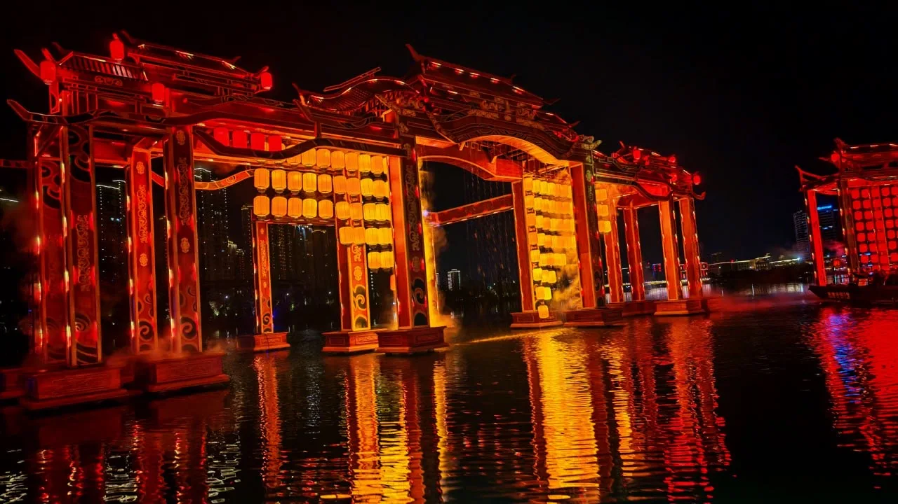
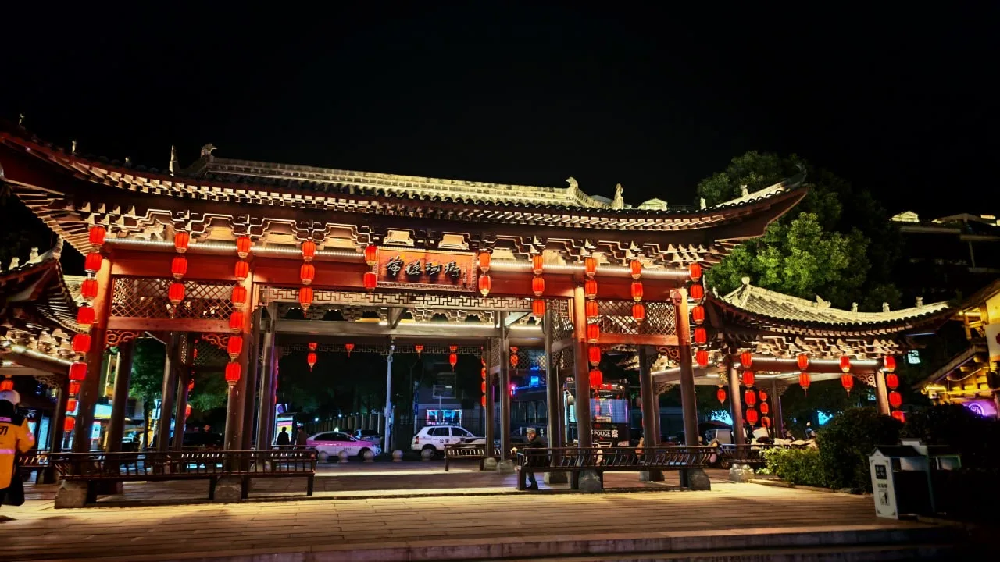
К оглавлению